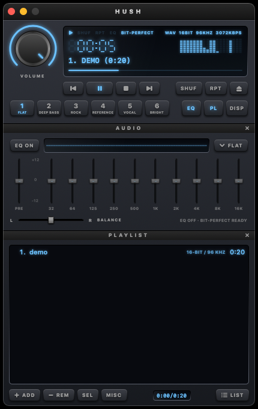

Hi-res music, played exactly as recorded.
Hush is a free Mac player for FLAC and other lossless music, styled like a classic car stereo.

Features
- FLAC, ALAC, WAV and AIFF, up to 32-bit / 384 kHz
- Bit-perfect playback: your Mac switches to each song's own sample rate
- Clean 10-band equalizer with presets, including a Reference voicing
- Track credits: everyone who worked on a song, from its tags or MusicBrainz
- Playlist with drag-to-reorder, play next, queue, shuffle, repeat and M3U / PLS support
- Media keys, Control Center and keyboard shortcuts